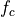
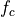

L2: Real-Time Input Output¶
The purpose of this lecture is as follows.
- To discuss the mechanisms by which signal processing is done in real-time
- To compare three different methods of implementing input/output (from ADC/ to DAC)
- To discuss essential tools for performance assessment of real-time DSP programs.
Basics of Real-Time Operation¶
Real-time Signal Processing fits in a category of problems known as hard-real-time problems. If you want to generate a signal with a sampling frequency of, say 32 kHz, then you have to guarantee that every , a new sample can be sent to the Digital-to-Analog converter. If the sample comes even one microsecond too late, then the signal will lose its fixed sample frequency of 32 kHz, resulting in severe signal distortion.
Furthermore, because many real-time digital-signal-processing (DSP) programs transform and process signals as they are received, these DSP programs typically are not developed to ‘compute ahead’: real time signals are not processed in batch, but rather as they appear, in real time. If an Analog to Digital Converter is configured to sample a signal at 32 kHz, then it will deliver a new input to the DSP program every . Your DSP program has to complete all the computations needed for one single sample within . If it can complete the computations sooner, that’s fine; your processor could take a rest, switch into sleep mode and save power. However, the computations must complete within , since otherwise (a) the output signal is not produced at the correct sample frequency and (b) the C program misses the next input sample.
Real-time DSP operation requires the time to compute on a new input sample to be smaller than the sample period.
The previous figure is a sketch of the operations taking place in a real-time DSP
application. When a new sample is received, the processor works for to
compute an output from the input, and then produces an output sample and goes to sleep (or idle mode).
After , the new input is received, and the processing loop starts over.
Obviously, the sample period must be longer than the working period , and the
slack must be positive. The load of the processor (expressed as a relative number
between 0 and 100%) is  .
.
In the following, we will break out in the time needed for input/output, and the time needed for computations, and we will discuss several mechanisms through which this real-time operation can be constructed.
Hardware Sharing Factor¶
However, before diving into real-time input/output mechanisms, it’s useful to understand the concept of a Hardware Sharing Factor or HSF.
Important
The Hardware Sharing Factor (HSF) is the number of clock cycles available to a processor
to compute a new real-time output from a real-time input. In a real-time signal processing problem with
sample rate  , a processor with a clock frequency  has an
.
, a processor with a clock frequency  has an
.
For example, in our lab projects, we are using an MSP432 running at 48MHz. At a sample rate of 16 kHz, this means that every sample has 3,000 clock cycles of processing time. Ideally, these 3,000 cycles would be used for processor computations - although we’ll find that a portion of these cycles are lost to input/output overhead in practice.
The HSF is a crucial element in setting up a digital signal processing design, because it tells you how many clock cycles you have available to do useful work (computations). Our projects will vary the sample rate between 8 kHz and 32 kHz, leading the HSF’s of between 1500 and 6000 cycles/sample. In real-life DSP applications, the variation can be much higher and can vary by orders of magnitude depending on the application domain. Video and software radio, for example, will use sample rates in the MHz range, while high-speed networking and radar would require the GHz sample rate. Processing signals at this speed requires a very fast digital design. For high-throughput applications, the HSF can drop to 1, or even below 1. When the HSF is 1, it means that every clock cycle, a new sample must be processed. When the HSF is below 1, it means that every clock cycle, multiple samples must be processed.
Obviously, a low HSF is not easy on implementation. The hardware sharing factor determines, in fact, whether it’s even possible to implement a DSP application on a given processor. Software implementation will need an HSF between 100 and 1000. If the HSF falls below 100, you may need to consider a different implementation strategy (such as a hardware implementation on FPGA).
Signal Processing Hardware¶
Since we will study the real-time input/output characteristics for signal processing on the lab kit, let’s first consider the digital architecture of this kit. In the following, we will abstract out the analog components such as anti-alias filters and reconstruction filters, and only consider the digital components.
The Audio BOOSTXL board contains a microphone (with pre-amplifier), a 14-bit DAC, and a loudspeaker (with amplifier). The MSP-EXP432P401R kit contains the MSP432P401R microcontroller, which integrates a 14-bit ADC, an ARM Cortex M4 processor, and a slew of peripherals.
In this system, real-time operation implies the following activities will complete within one sample period .
- An input sample needs to be captured from the microphone (or another input pin) and converted in the 14-bit ADC.
- The input sample must be processed on the ARM using a suitable DSP algorithm. Eventually, the ARM program will compute the value for an output sample.
- The output sample needs to be transmitted to the 14-bit DAC on the BoostXL board, where it is converted into an output voltage for the loudspeaker.
We will discuss three different mechanisms to achieve real-time operation. We will look for the strong and weak points for each scheme and evaluate how to implement these schemes onto the Lab kit.
Basic A/D operation¶
In Lecture 1, we briefly discussed the operation of the ADC14 Peripheral. In terms of conversion timing, the ADC works as follows.
- Sample Trigger: The conversion starts with the sample-and-hold module grabbing the voltage at the ADC input. There are multiple input channels available, and through an analog multiplexer, the programmer can select what pin voltage to select.
- Conversion: After the sample trigger, the ADC conversion starts. As a successive-approximation ADC, it takes one clock cycle to determine each bit of output resolution. When the conversion completes, the ADC output is stored in an output buffer.
- End of Conversion: At the end of conversion, the ADC sets a flag to indicate that a new ADC output is ready. Also, the EOC flag can be used to interrupt the processor.
The ADC has many operation modes, that differ in how the ADC is triggered and how the conversion and end-of-conversion phases are handled. The MSP432 Technical Reference Manual Chapter 22 specifies those in great detail. For this lecture on real-time input-output, it is sufficient to understand that (1) the ADC has to be triggered to initiate a conversion, and (2) it takes several clock cycles before the conversion completes.
Basic D/A operation¶
In Lecture 1, we also discussed the operation of the DAC8311 Chip, a 14-bit DAC located on the AUDIOXL board. This DAC is connected to the MSP432 microcontroller through a serial interface. Sending a new 14-bit sample to the chip involves the following steps.
- Assert SYNC: The DAC chip is notified that a new sample is coming through asserting the SYNC pin. This pin is driven through a GPIO pin on the MSP432 microcontroller.
- SPI Transfer: The DAC chip receives two bytes (high byte, low byte) over the serial SPI connection, which takes 16 SPI clock cycles. The SPI is controlled through an SPI peripheral on the MSP432 microcontroller.
- De-assert SYNC: The sample is latched to the DAC output as an analog voltage by de-asserting the SYNC pin.
The datasheet of the DAC8311 chip describes the details of this protocol. For understanding real-time input-output, it is sufficient to understand that updating an output sample on the DAC takes several operations: asserting a GPIO pin, transmitting two bytes over SPI, and de-asserting the same GPIO pin.
Timing Constraints for Software¶
We next define three terms that are useful to describe the execution time of software: meeting the timing constraints, constant execution-time and repeatable execution-time.
For a given C program, multiple factors affect its execution time: the number of instructions in the program, and the clock frequency of the processor running the program, are two obvious ones. Some factors are harder to capture - such as the effect of the internal processor architecture (the cache, the pipeline, and so on). Also, there may also be unpredictable factors that are defined by the data values processed by the C program. For example, a sorting program will have an execution time proportional to the length of the numbers that have to be sorted.
In real-time applications, we are greatly concerned with the execution time of the software. At the very least, we wish the software to meet the timing constraints, which means that the program must finish computing the output before it’s due. From the earlier discussion, we know that the output must be ready before the sample period has elapsed.
When a software program always takes the same amount of time to execute, then we will call this program to be running in constant execution time. It may not be possible to tell from a C source code exactly how much time that constant-time period will take - so we may describe a program to have repeatable time when we know that it will always use the same amount of clock cycles.
Polled Input/Output¶
We are now ready to discuss the first implementation of real-time DSP operation. This design uses polled input/output. It is completely driven out of software. The following shows pseudocode (meaning - not actual code) for this processing:
1 while (1) { 2 3 trigger_adc_conversion(); 4 while (adc_conversion_running) 5 /* wait */ ; 6 insample = read_adc_output(); 7 8 outsample = processSample(insample); 9 10 assert_dac8311_sync(); 11 send_spi(hibyte(outsample)); 12 send_spi(lobyte(outsample)); 13 deassert_dac8311_sync(); 14 15 }
Real-time operation at a fixed sample rate is achieved as long as every function call in this pseudocode takes a constant amount of cycles to complete. The first few lines (3-6) are the ADC conversion, next is the user-defined processing, and the last few lines (10-13) is the DAC conversion. If the user-define processSample function is constant-time, then the overall program will also be constant-time, i.e., each iteration through the while loop takes the same amount of clock cycles.
The sampling frequency of the DSP application is determined by the execution time of the while-loop body. Without knowing the contents of processSample, we cannot know the sample period that can be achieved. In a polled input/output application, the samples are computed as fast as possible (i.e., the slack time is zero).
Measuring D/A Conversion¶
We will look at an example of a polled operation and measure the sampling frequency.
Important
This example, like others in the course, is distributed as a github repository. The repository dsp_l2 includes four different projects: an illustration of polled I/O, interrupt-driven I/O , and DMA-driven I/O, as well as an illustration of cycle counting. You can download these examples in CCS in the same manner as which you download the labs. In the project explorer, select ‘Import..’ from git. You will be able to download all projects at the same time.
The dma_l2_polled example is as follows. The __delay_cycles() is a function call that causes a precise delay in a program. Compile the program and run it on the DSP kit. In addition, monitor the DAC SYNC signal and produce an oscilloscope output.
1 #include <ti/devices/msp432p4xx/driverlib/driverlib.h> 2 #include "msp432_boostxl_init.h" 3 4 uint16_t processSample(uint16_t x) { 5 __delay_cycles(800); 6 return x; 7 } 8 9 #include <stdio.h> 10 11 int main(void) { 12 WDT_A_hold(WDT_A_BASE); 13 14 msp432_boostxl_init_poll(BOOSTXL_J1_2_IN, processSample); 15 msp432_boostxl_run(); 16 17 return 1; 18 }
Output sample rate for a polled DSP program.
The SYNC pulses are 50 microseconds apart, meaning that this program runs at a sample rate of 20KHz. That is the sampling frequency we achieve when the computation time takes approximately 800 cycles.
It’s useful to quantify this number of 800 cycles more precisely.
- 800 cycles at 48MHz corresponds to 16.67 microseconds. So, out of the 50 microseconds spend to read a sample, process it, and send it to the DAC, about 16.67 are spent on computing, and 33.33 microseconds are spent on acquiring the sample and sending it to the DAC.
- We can check this by decreasing the cycle delay of processSample, for example to 400 cycles. In this case we measure 40.4 microseconds. Since 400 cycles take 8.33 microseconds, we are taking about 32 microseconds for the ADC and DAC operation.
This, however, should not come as a surprise. The peripheral operation (ADC and DAC access) is completed sequentially next to the actual compution. The bottom line is that polled I/O is about the best performance you can get for the given processor frequency since the slack time is always zero. But on the flip side, it’s extremely hard to develop an application at a fixed sample rate (say, 16 kHz). In addition, a lot of time can be wasted by ‘waiting’ for peripherals to produce or accept data. In real-time applications, polled I/O clearly has limits.
Interrupt Driven Input/Output¶
In the second form of real time I/O, we make use of an external timer module to start ADC conversions at precise intervals. Each time an ADC conversion completes, it generates an interrupt. The interrupt service routine that services the A/D will read the A/D output and complete the user processing. Finally, a second timer is used to transmit the output sample to the DAC at the proper rate.
The pseudocode of this operation looks as follows. The initialization function configures a periodic timer and the ADC. The ADC ISR reads the sample and process an output sample, and forwards the result to the DAC. The run function enables ADC conversions and puts the program into a low-power (sleep) mode. Each time a hardware interrupt occurs, the processor wakes up, processes the ISR, and goes back to sleep.
1 initialize() { 2 set periodic ADCtimer to desired sample frequency; 3 configure ADC conversion to initiate when periodic ADCtimer rolls over; 4 enable ADC interrupt; 5 } 6 7 ADC_ISR() { 8 insample = read_adc_output(); 9 outsample = processSample(insample); 10 assert_dac8311_sync(); 11 send_spi(hibyte(outsample)); 12 send_spi(lobyte(outsample)); 13 deassert_dac8311_sync(); 14 } 15 16 run() { 17 enable ADC conversions; 18 while (1) 19 go to low power mode(); 20 }
The main advantage of using a timer, is that the sample rate can be guaranteed, as long as the sample processing can complete within a sample period. The output samples will also be at a fixed sample rate assuming that processsample is a constant-time function.
Missing an interrupt¶
We should be cautious to ensure that the sample processing time isn’t too long. When that happens, the ADC conversion would complete when the processing of the previous sample has not finished. The processor would ignore the resulting interrupt, and thus we would loose a sample. It’s interesting to observe the sample rate as you gradually increase the number of clock cycles in processSample. The resulting sample frequency will no longer be 32KHz, but as the processor load increases, the exact response depends on the implementation of ADC interrupts and their handling inside of processor ISRs.
Note
Experiment: Gradually increase the processor load from 200 cycles to 1000 cycles, measuring each time the resulting sample frequency on the DAC SYNC pin. Can you find a pattern?
1 #include <ti/devices/msp432p4xx/driverlib/driverlib.h> 2 #include "msp432_boostxl_init.h" 3 4 uint16_t processSample(uint16_t x) { 5 __delay_cycles(200); 6 return x; 7 } 8 9 #include <stdio.h> 10 11 int main(void) { 12 WDT_A_hold(WDT_A_BASE); 13 14 msp432_boostxl_init_intr(FS_32000_HZ, BOOSTXL_J1_2_IN, processSample); 15 msp432_boostxl_run(); 16 17 return 1; 18 }
Direct Memory Access Driven Input/Output¶
The final form of real-time input/output is to make use of direct memory access. A DMA module is a peripheral that can perform memory-to-memory transfers on behalf of the processor.
When the ARM Cortex M4 reads the ADC14 peripheral output, that is implemented as a memory read from a memory-mapped register; we will discuss some of these details in one of the future lectures on performance optimization. The challenge of making the ARM Cortex M4 perform these memory load and store operations, is that every load/store operation takes away a cycle that could be used for useful computations. A Direct Memory Access can make these load/store operations on behalf of the Cortex M4, thereby freeing up the processor to do useful work. With DMA driven I/O, the DMA peripheral accesses the ADC14 on behalf of the ARM, and stores the samples in RAM where the ARM Cortex M4 can pick them up.
The DMA operation is fairly complex, and in this lecture we will only make a once-over-lightly discussion of it. We will discuss some of the internal details later when we care about detailed performance optimization.
DMA-driven I/O’s idea is to fill up a complete buffer with samples before turing over the buffer to the processor. The processor can then compute on an entire buffer of samples. This type of block-level processing can be an advantage under some conditions. For example, burst memory access of a block of data can be faster then reading individual elements; a pipelined processor delivers a higher throughput because it can work on multiple instructions at once; and so on.
The following block diagram shows the sequence of operations happening under DMA driven I/O. A periodic timer starts A/D conversions at a specified interval. When an A/D conversion finishes, the DMA module is triggered and the sample is forwarded through a DMA channel to a buffer in main memory. The DMA trigger is a hardware signal; no software is involved to store a sample value in memory. The DMA makes use of a ping and a pong buffer, with the idea that the ARM is only allowed read access to the buffer which is currently not being filled. Thus, when DMA Channel 1 fills the Ping buffer, the ARM reads the Pong buffer, and when DMA Channel 2 fills the Pong buffer, the ARM reads the Ping buffer. The switching between buffers is controlled through a DMA Interrupt Service Routine, and is done behind the scenes. Finally, because the access to the DAC8311 is more complex than the ADC14 (i.e. it requires a combination of GPIO and SPI), no DMA transfers are used to produce output samples.
DMA Example¶
Here is a complete example of a DMA driven input/output program. The initialization function call includes an additional parameter: the size of the Ping/Pong buffer.
1 #include <ti/devices/msp432p4xx/driverlib/driverlib.h> 2 #include "msp432_boostxl_init.h" 3 4 void processBuffer(uint16_t x[32], uint16_t y[32]) { 5 uint16_t i; 6 for (i=0; i<16; i++) { 7 y[i] = x[i]; 8 } 9 } 10 11 #include <stdio.h> 12 13 int main(void) { 14 WDT_A_hold(WDT_A_BASE); 15 16 msp432_boostxl_init_dma(FS_32000_HZ, BOOSTXL_J1_2_IN, BUFLEN_32, processBuffer); 17 msp432_boostxl_run(); 18 19 return 1; 20 }
Performance Measurement¶
Finally we will discuss an easy method for performance measurement. A hardware timer is well suited to measure the execution time of a software function. The pseudocode for such a measurement would look as follows. We have assumed that a generic timer readout function, timer_value(), exists. This function returns from a periodic counter that continuously increments from 0 to MAXUINT, then wraps around to 0 and increments again. The first term (a2-a1) is the execution time of mistery_function(), while the second term (a1 - a0) removes the overhead of the timer_value() function call. On complex processors (which includes, in fact, the ARM Cortex M4), many factors can affect computation time, including cache, memory bus conflicts, interrupts on the processor, etc. For such cases, one would perform the measurement multiple times - say 10 times - and only keep the median result.
1 void mistery_function() { 2 // ... 3 } 4 5 uint32_t measure_function() { 6 a0 = timer_value(); 7 a1 = timer_value(); 8 mistery_function(); 9 a2 = timer_value(); 10 11 return (a2 - a1) - (a1 - a0); 12 }
Measuring Processing Clock Cycles¶
The dsp_l2_measurePerformance example shows the use of a function in the MSP432_BOOSTXL library that can be used to measure the cycle time performance of a function. The signal processing does not have to be active to perform the measurement. In fact, this example simple measures the cycle count performance, and then exits.
1 #include <ti/devices/msp432p4xx/driverlib/driverlib.h> 2 #include "msp432_boostxl_init.h" 3 4 uint16_t processSample(uint16_t x) { 5 __delay_cycles(1800); 6 return x*x; 7 } 8 9 #include <stdio.h> 10 11 int main(void) { 12 WDT_A_hold(WDT_A_BASE); 13 14 uint32_t c = measurePerfSample(processSample); 15 printf("Perf processSampleDirectFolded: %d\n", c); 16 17 return 1; 18 }
The output of this program (the printf function) will appear in the Console window of CCS:
Conclusions¶
We discussed three different techniques to achieve real-time input/output operation for digital signal processing. Polling-based input/output ensures that no slack is left on the processor but makes it hard to control the sample rate. Interrupt-based input/output guarantees the same rate, as long as the processor is not overloaded. DMA-based input/output is a block-based version of interrupt-based input/output, and it can mask the overhead of A/D conversion entirely from the processing time.
For the coming few labs, we will rely on interrupt-based input/output. As the signal processing becomes more challenging, we may switch to DMA-based input/output. We will leave polling-based input/output for the academic oddity it is.